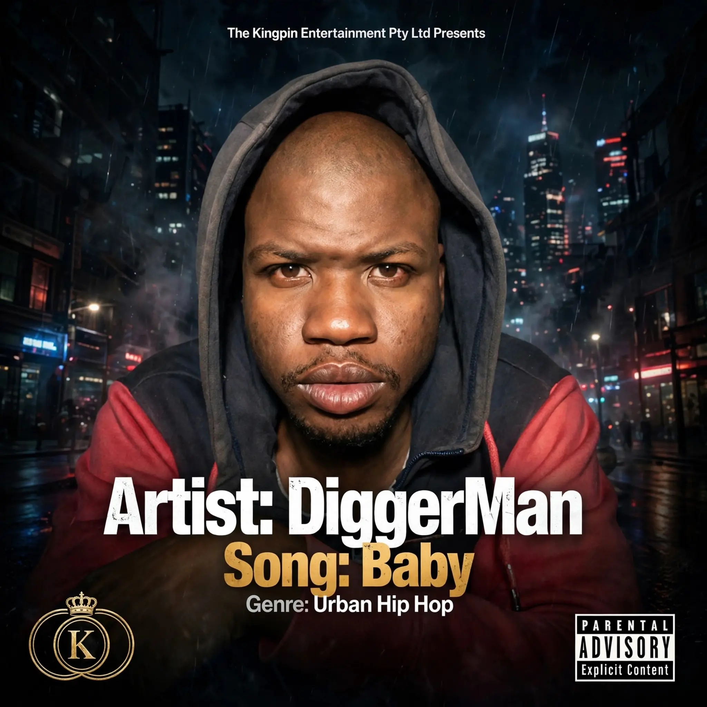

Official Catalogue
Browse albums, EPs, singles and soundtrack releases, or search the track index.
25 releases68 tracks
Music. Passion. Legacy. Independent South African recording artist and songwriter creating Amapiano, Afro House and Deep House music, rooted in Riverlea, West Johannesburg.
Listen on SpotifySoundCloudExplore CELESTIAL SmartLinksExplore by GenreMusicBrainzOfficial Press KitArtist SpotlightOfficial Artist HubDiggerMan is the recording-artist identity of Dico Nhlakanipho Dube, also known as Dico Nhlakanipho Phakathi. This identity connects to the official DiggerMan Spotify Artist profile. He is an independent South African recording artist and songwriter from Riverlea, West Johannesburg, creating Amapiano, Afro House and Deep House music.
Operating through The Kingpin Entertainment Pty Ltd, DiggerMan is building an independent catalogue and a long-term archive of music, visual work and community-rooted stories.
“Some stories are real… they just sound like fairy tales.”
Explore DiggerMan music and albums: 25 MusicBrainz release groups and 68 individual track pages, with Spotify-verified track titles, cover artwork, duration and direct PLAY ME links. Discover CELESTIAL FREQUENCY and follow the upcoming NO LOOKING BACK double-album project, scheduled for 15 December 2026.
Browse albums, EPs, singles and soundtrack releases, or search the track index.
25 releases68 tracksListen to DiggerMan's official artist catalogue on Spotify.
Browse the independent artist identity and official release records.

Official DiggerMan album artwork. Explore the Amapiano, Afro House and Deep House catalogue.
Explore the Music Catalogue →
Upcoming DiggerMan double-album project, scheduled for 15 December 2026.
Upcoming release
Official DiggerMan single artwork and track entry.
View SEGA Track →A clean presenter-style image area designed for artist portraits, cover art, music photography, video stills and future press images. Existing approved imagery is retained.


Historical music-video material and selected moments from DiggerMan's early creative period.
Community-rooted visual and cultural material connected to Riverlea and West Johannesburg.
Open Archive & Kingpin Site →Biography, official links, release information and media-ready reference material.
Explore the place-based creative archive connected to DiggerMan and Riverlea, West Johannesburg.
Artist: DiggerMan / Dico Nhlakanipho Dube
Base: Riverlea / West Johannesburg, South Africa
MusicBrainz Artist ID: 56a9fd42-e71b-4292-93b2-6662e1588503
The official network now uses a parallel identity structure across controlled websites, music platforms, professional profiles and public artist databases.
Media, collaborations, bookings and professional enquiries:
Presented by The Kingpin Entertainment Pty Ltd.